Product Concept / Home Appliance
空气净化器
空间家电概念设计 / CMF 表达 / 场景渲染
- 项目定位
- 面向居家空间的空气净化器概念设计，强调产品与室内环境的融合。
- 设计重点
- 关注进出风关系、滤芯结构、体块比例、立面语言和使用场景适配。
- 展示内容
- 空间调研、用户与情绪板、草图推导、结构模块、细节渲染和室内场景。
- 能力体现
- 家电产品概念定义、造型推导、CMF 语言、结构展示和场景化表达。
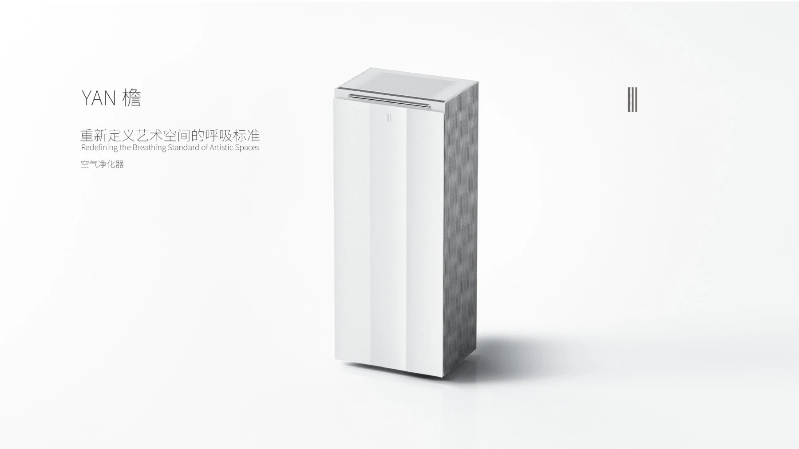
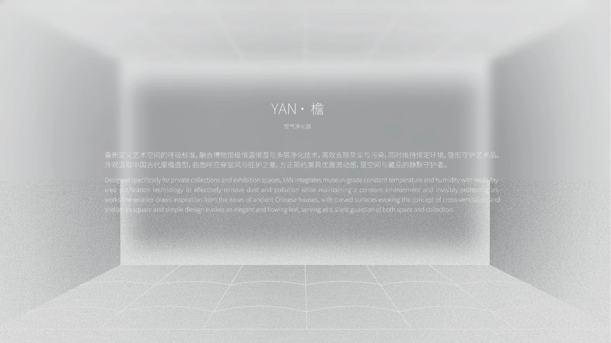
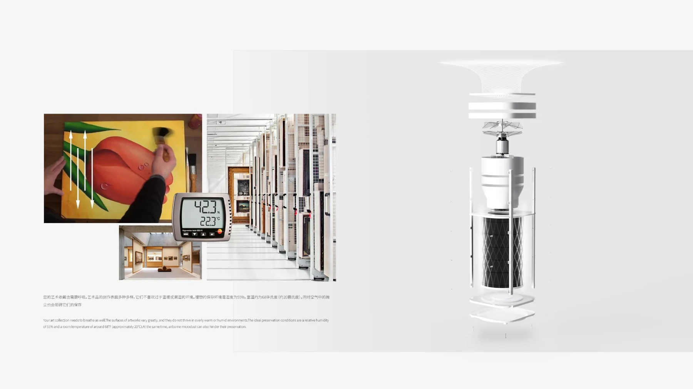
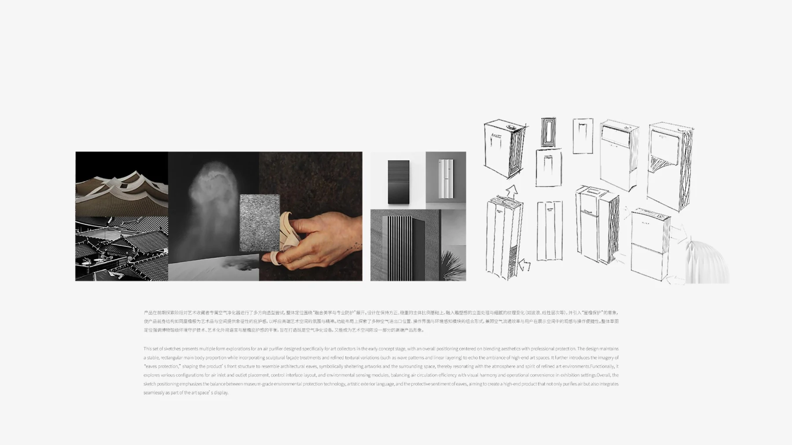
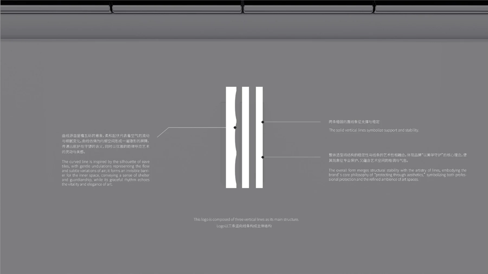
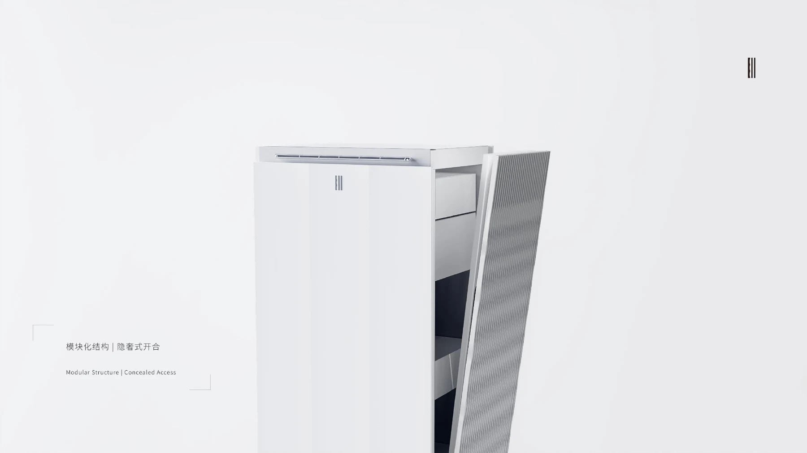
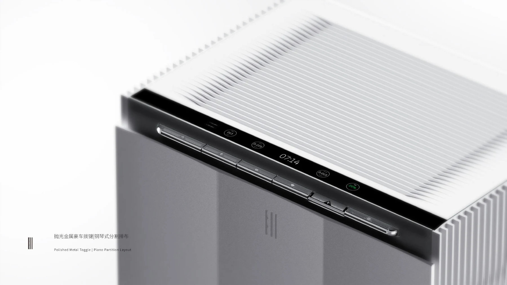
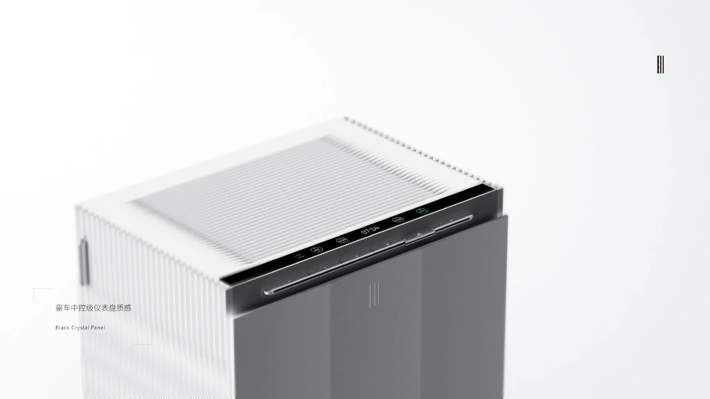
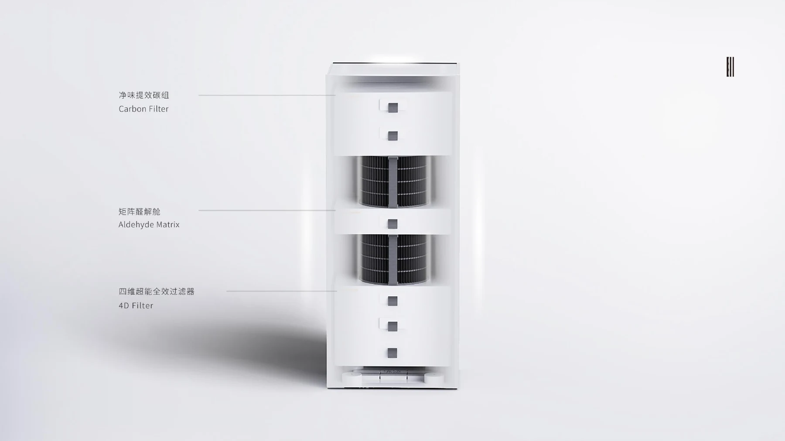
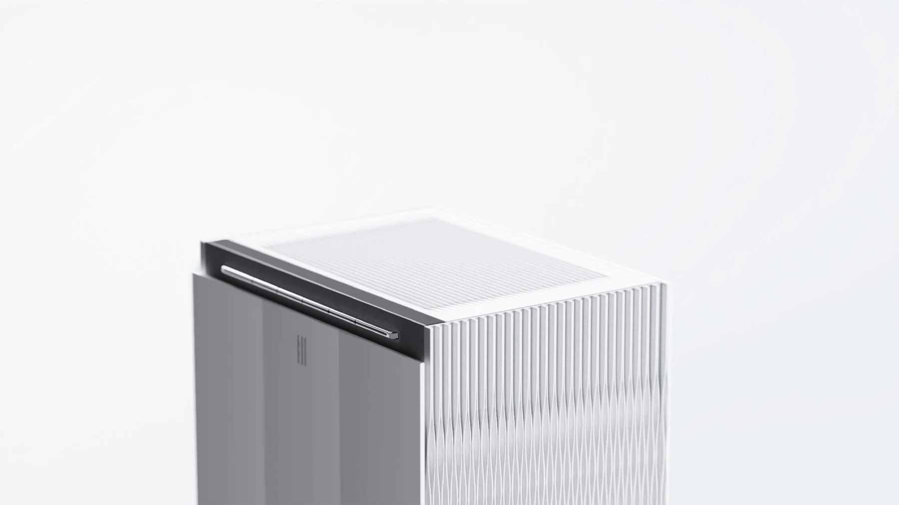
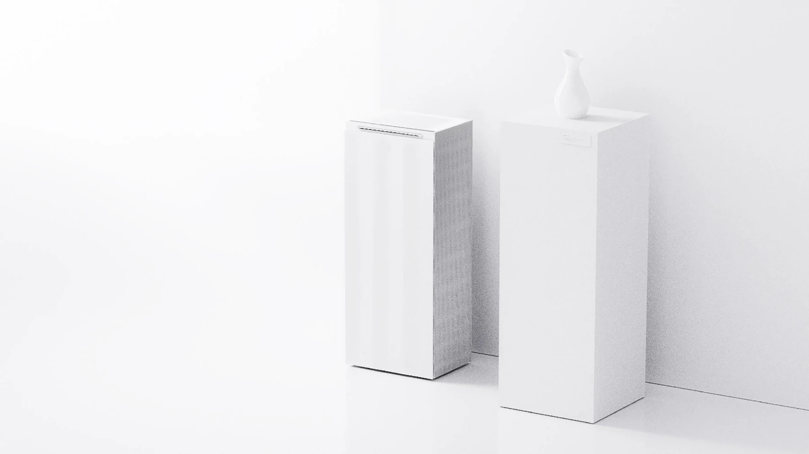
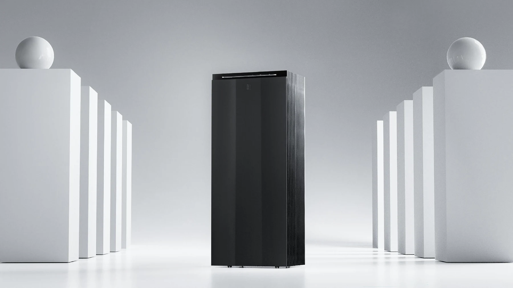
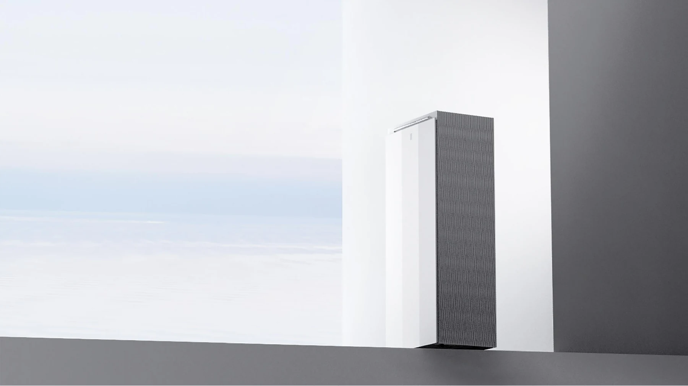
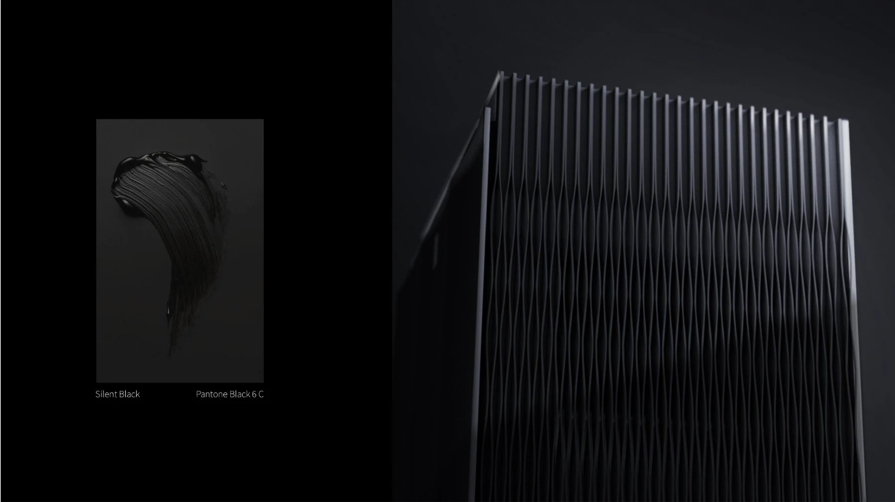
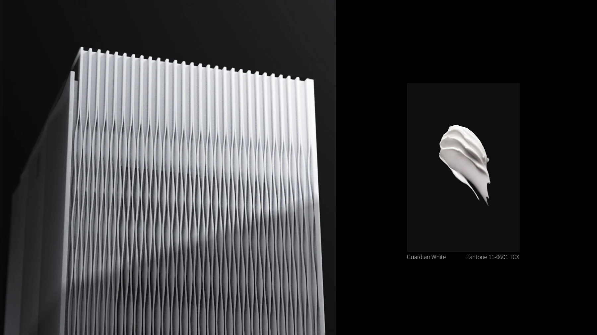
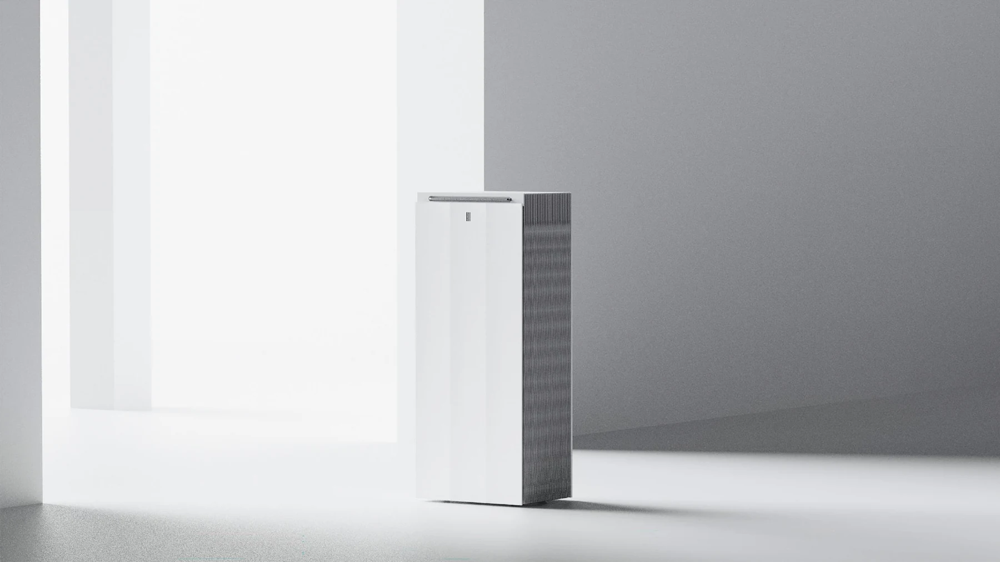